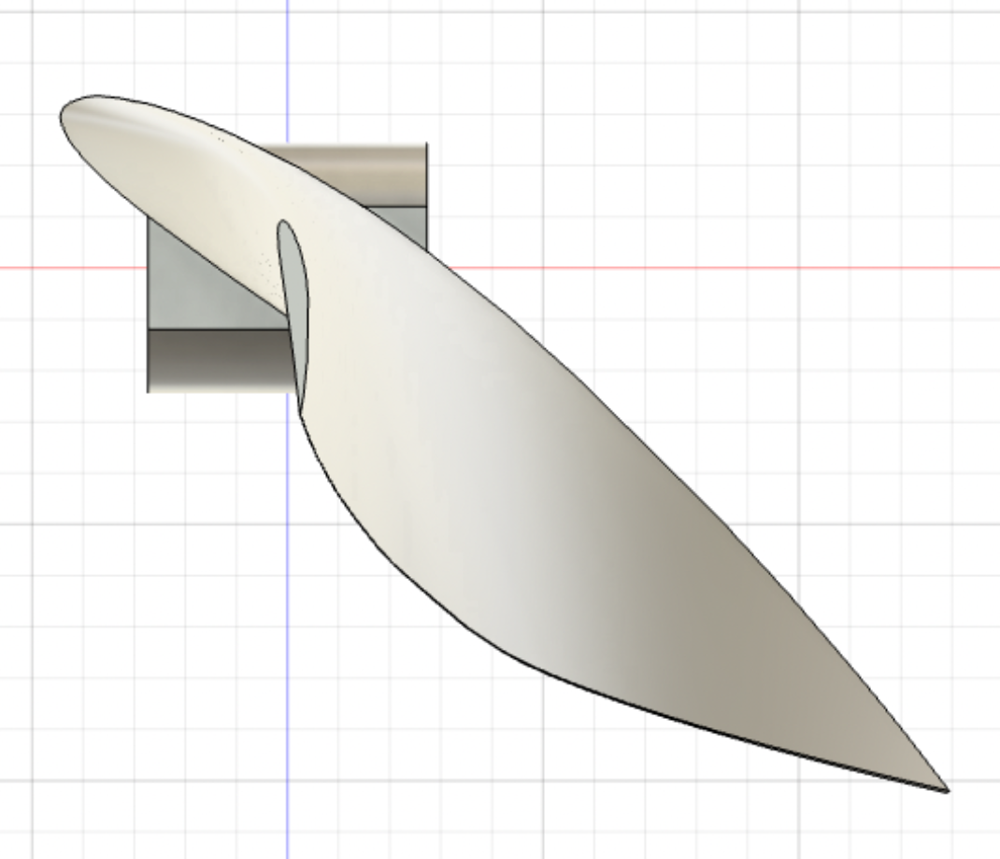
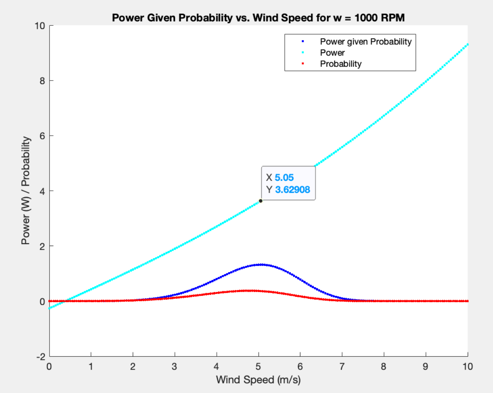
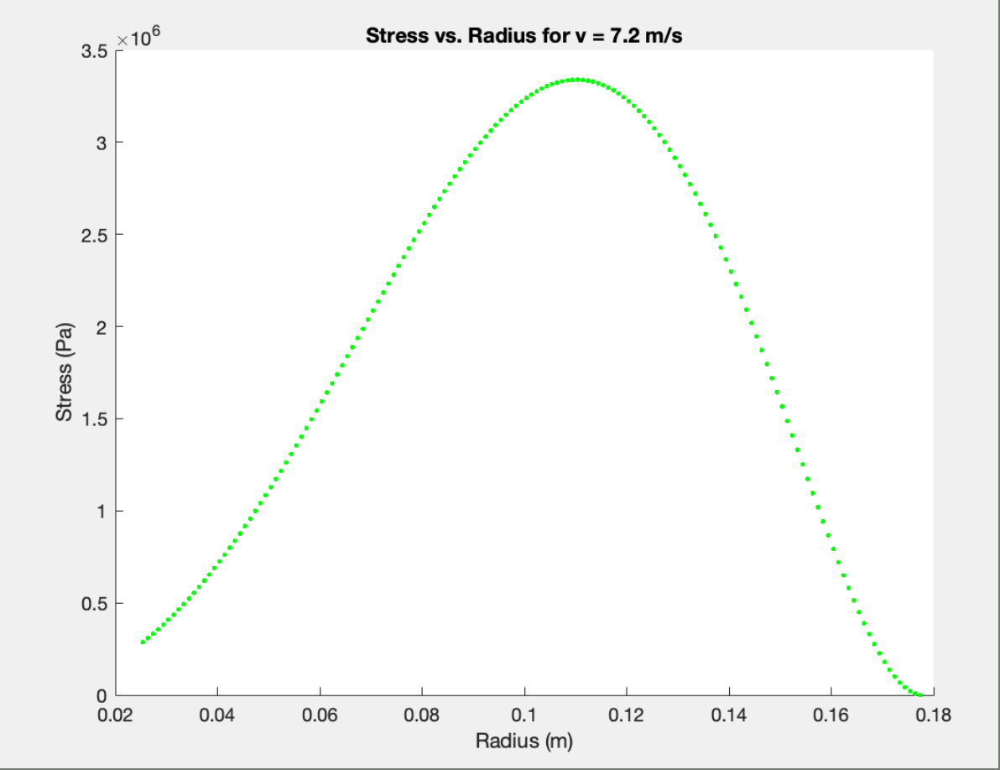
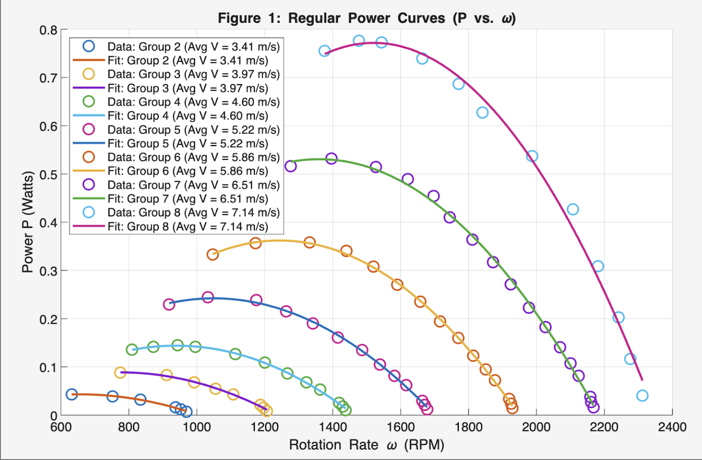
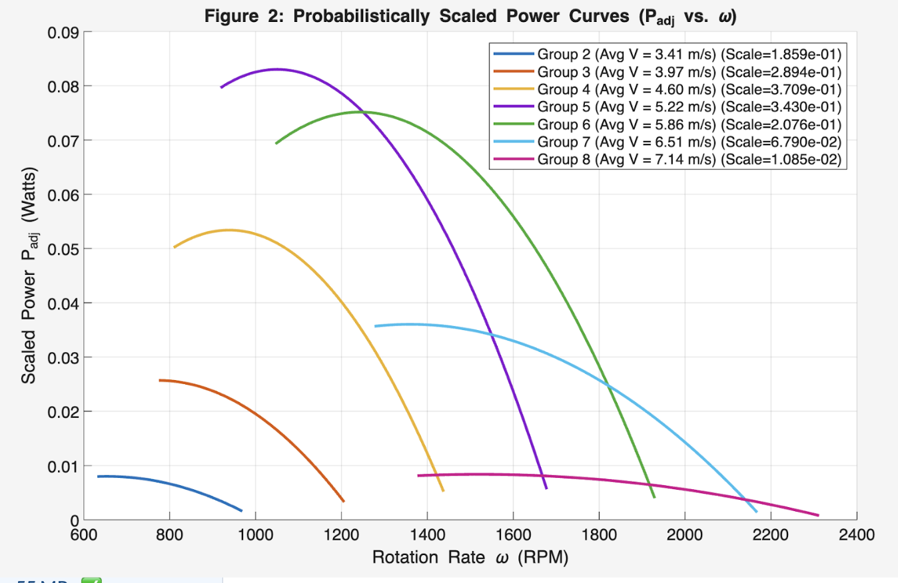

For MAE 4272 (Heat Transfer and Fluids Laboratory), we were asked to design an airfoil. The goal was to design an airfoil to operate at a fixed rotation rate, while operating in wind conditions given by a Weibull distribution. We were asked to design this to learn how to optimize a design. I chose to optimize our design for power at our chosen rotation rate of 1000 RPM. Given our Weibull distribution, I calculated which wind speed to design for, which was determined to be 5.05 m/s. The peak is visible in the figure to the right.

To optimize power, I designed to optimize our Cl/Cd ratio, which meant that I designed for a constant angle of attack of about 9.75 degrees. I twisted the pitch angle of the airblade to maintain this angle of attack. Then, I tapered our chord length to both maximize power within our limiting constraints. Here is an image of the expected stress on the airblade at the highest probable wind speed:

We tested the airfoils in a wind tunnel, obtaining power curves for the airfoils from 3.4 m/s to 7.1 m/s, our upper limit of likely wind speeds. Our results showed that our airfoils did generate the most power near 1000 RPM; however, the power generation was an order of magnitude less than expected. The power curves scaled by probability can be seen here:

